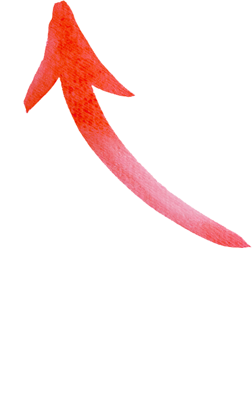

An open source, free sidebar for ThousandEyes, allowing you to quickly manage tests, manage dashboards, and more. Designed to work seamlessly via your existing permissions, no API token needed.
Not official. This is independent community software. It is not sponsored, endorsed, or affiliated with Cisco or ThousandEyes.
Chrome Edge

TE OpticsCtrl+Shift+B (Chrome/Edge) to show it.
That’s it! just use ThousandEyes as normal, hit the TE Optics bookmark to launch the side bar.
Updating? Nothing to do — the bookmark always loads the latest build automatically.
Think of TE Optics as a power sidebar that “snaps” to what you’re doing in app.thousandeyes.com.
Open it anywhere, and it surfaces the right tools for that page.
On Dashboards (the /dashboard experience) it turns into a dashboard toolkit:
backup, restore, and cleanup—grab JSON straight from the UI, save it, re‑apply it,
and optionally strip widget filters / clear virtual-agent fields for cleaner restores.
Everywhere else it becomes a test command center: fast Manage (filter, inspect, edit) plus Create for bulk creation—powered by your existing permissions (no API token needed). Create supports:
Tip: paste multiple targets (one per line) to spin up a whole batch in one go.
See the full commit history and latest releases on GitHub.
app.thousandeyes.com page and automatically detects your
active session. It tries cookie auth first, then searches browser storage
for tokens, and finally intercepts live TE app requests to capture the
auth header — no separate server or manual token entry required.